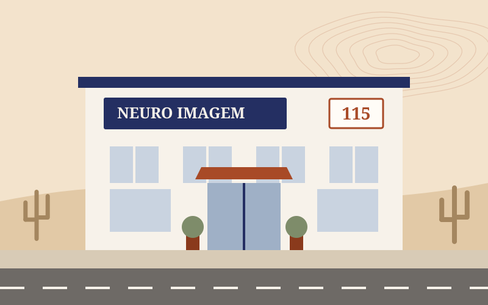

Arcoverde · matriz115
Neuro Imagem Arcoverde
- Endereço
- Av. Capitão Arlindo Pacheco, 115, Centro, Arcoverde–PE. Em frente à Prefeitura.
- Telefone
- (87) 3321-1111
- Horário
- [PREENCHER: dias e horários]
O que é feito aqui: [PREENCHER: exames e consultas desta unidade]